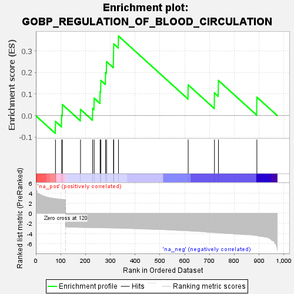
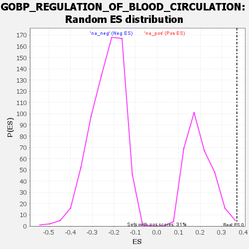

| | | Dataset | genes_ranked_stat_0.1 |
| Phenotype | NoPhenotypeAvailable |
| Upregulated in class | na_pos |
| GeneSet | GOBP_REGULATION_OF_BLOOD_CIRCULATION |
| Enrichment Score (ES) | 0.36957365 |
| Normalized Enrichment Score (NES) | 1.8972422 |
| Nominal p-value | 0.006451613 |
| FDR q-value | 0.35197362 |
| FWER p-Value | 0.836 |
Table: GSEA Results Summary

Fig 1: Enrichment plot: GOBP_REGULATION_OF_BLOOD_CIRCULATION
Profile of the Running ES Score & Positions of GeneSet Members on the Rank Ordered List

Fig 2: GOBP_REGULATION_OF_BLOOD_CIRCULATION: Random ES distribution
Gene set null distribution of ES for GOBP_REGULATION_OF_BLOOD_CIRCULATION